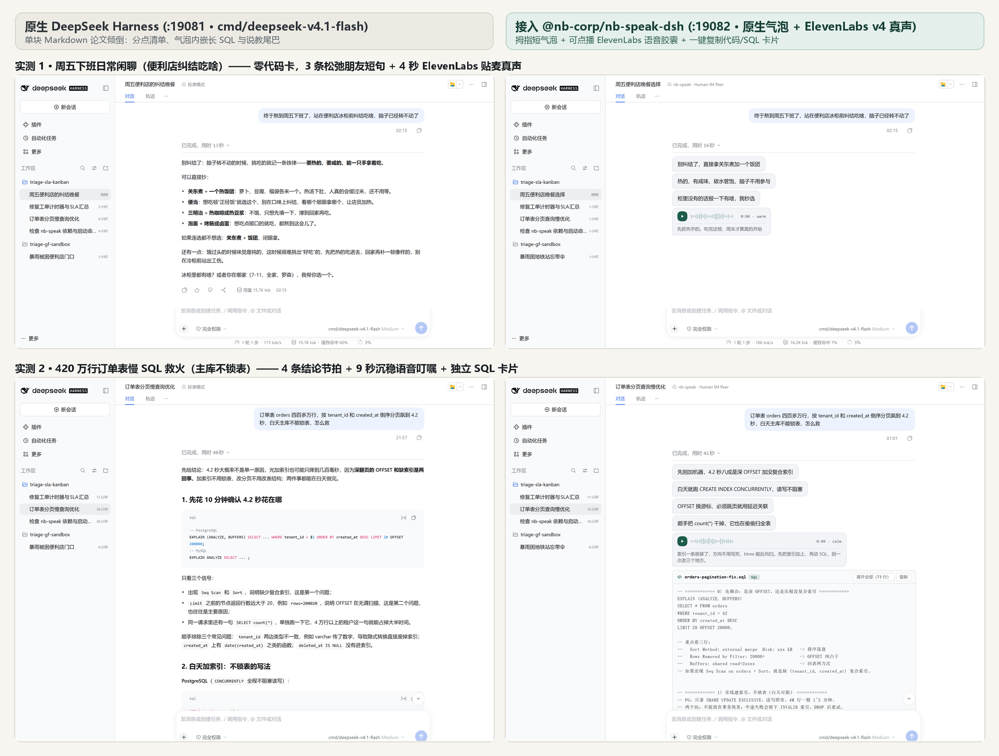

不碰 send_message
原生注册 send_bubble 与 send_artifact，DSH 子代理通信工具原封不动，多代理编排零回归。
原生注册 send_bubble + send_artifact 并挂载至 turnTail：短句圆角气泡、22 柱 ElevenLabs eleven_v4 语音胶囊与可复制代码卡。
npx --yes github:NB-Corp/nb-speak-dsh --apply --profile web
:19081 · assistant.content)
内嵌长 SQL + 清单墙
@nb-corp/nb-speak-dsh (:19082 · turnTail)
exec.concludeTurn()
自动持久化至 ~/.dsh/plugins/nb-speak-dsh，规避临时 npx 缓存清理断链，绝不触碰 .credentials.yaml。
精准避开子代理命名冲突、空响应五次重试与折叠步骤抽屉三大痛点。
send_message原生注册 send_bubble 与 send_artifact，DSH 子代理通信工具原封不动，多代理编排零回归。
EMPTY_RESPONSE在工具执行步内直接调用 exec.concludeTurn()，零额外模型往返、零空转五次重试、零重复正文尾巴。
turnTail 独立渲染挂载于折叠步骤条之外；render() 剥离 Base64 音频仅留回执，完整真声经 presentationMeta 直供前端点播。
按宿主环境独立选用，或三仓联动。
Cordis 双工具 + WebUI turnTail 短气泡、22 柱波形胶囊与一键复制代码卡。
npx --yes github:NB-Corp/nb-speak-dsh --apply
跨框架协议与桥接母仓
通用 send_message + send_artifact SDK、OpenAI/SSE 桥接网关与 bubble_lint。
npx --yes github:NB-Corp/nb-speak serve
通用双层 Agent Skill
面向 Codex、Claude Code、Kiki、Cursor 的手机短气泡物理与可插拔 Persona 技能。
npx skills add NB-Corp/chat-human
